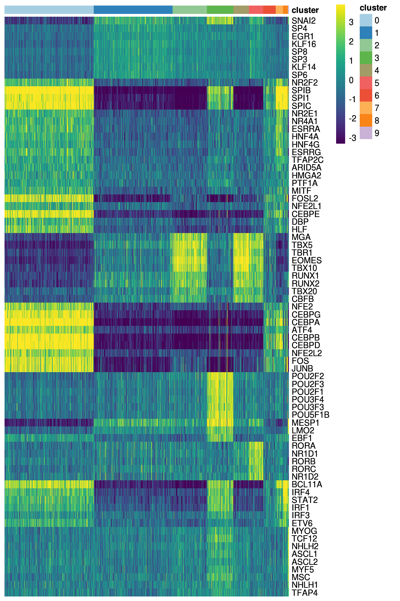
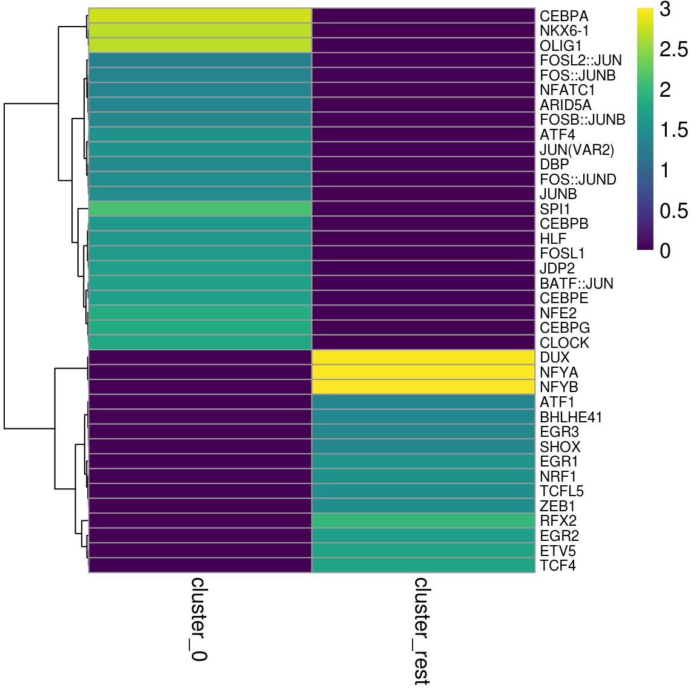
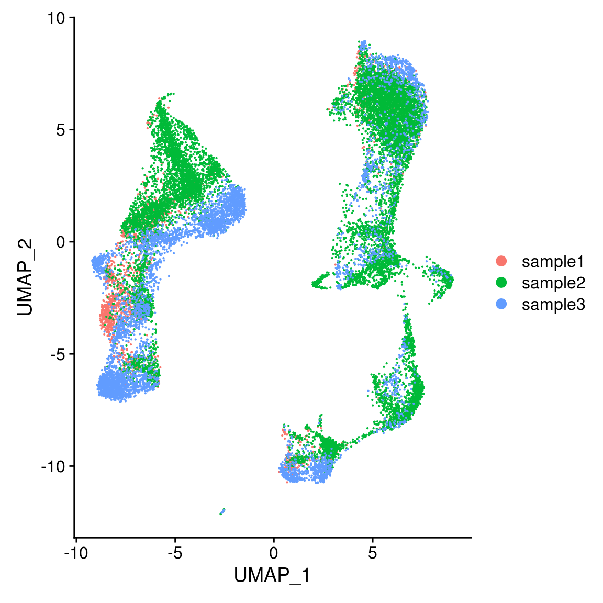

scATAC-pro Downstream analysis in R
1 Introduction
scATAC-pro generates results in plain texts, tables and .rds objects. This tutorial will access original downstream analysis results module by module, which was done by running command lines. We will use scATAC-pro outputs from 10x PBMC data as in the manuscript, except for the integrate module, where data from another study was used for illustration purpose.
1.1 Set up parameters, scATAC-pro output dir and source raw codes
library(data.table)
library(magrittr)
library(ggplot2)
library(Seurat)
library(RColorBrewer)
library(viridis)
library(pheatmap)
PEAK_CALLER = 'COMBINED'
CELL_CALLER = 'FILTER'
output_dir = '/mnt/isilon/tan_lab/yuw1/run_scATAC-pro/PBMC10k/output/'
down_dir = paste0(output_dir, 'downstream_analysis/', PEAK_CALLER, '/',
CELL_CALLER, '/')
devtools::source_url("https://github.com/wbaopaul/scATAC-pro/blob/master/scripts/src/dsAnalysis_utilities.R?raw=TRUE")2 Access original results
2.1 Access filtered peak-by-cell count matrix
mtx_path = paste0(output_dir, 'filtered_matrix/', PEAK_CALLER, '/', CELL_CALLER, '/matrix.mtx')
mtx = read_mtx_scATACpro(mtx_path)
rownames(mtx)[1:10]
## [1] "chr1-100028750-100029265" "chr1-100037792-100039050" "chr1-100046917-100047167"
## [4] "chr1-100047455-100047597" "chr1-100064941-100065019" "chr1-1000654-1000992"
## [7] "chr1-100065422-100065540" "chr1-100132556-100133436" "chr1-100152259-100152542"
## [10] "chr1-100184588-100184845"
colnames(mtx)[1:10]
## [1] "AAACGAAAGACACGGT" "AAACGAAAGAGGTGGG" "AAACGAAAGCACGTAG" "AAACGAAAGCGCCTAC"
## [5] "AAACGAAAGCTTTCCC" "AAACGAAAGGCGTCCT" "AAACGAAAGGCTTTAC" "AAACGAAAGTGATATG"
## [9] "AAACGAACAAACGACG" "AAACGAACAATTGCCA"2.2 Clustering
Clustering result was saved in .rds file as seurat_obj.rds and clustering label as one of the metadata
seurat_obj = readRDS(paste0(down_dir, 'seurat_obj.rds'))
## cluster label was saved in metadata active_clusters
table(seurat_obj$active_clusters)
##
## 0 1 2 3 4 5 6 7 8 9
## 2139 1877 823 622 395 362 251 146 129 39
## plot umap
DimPlot(seurat_obj, reduction = 'umap') 
2.3 GO Analysis
The GO term enrichment result was saved in a .xlsx file.
library(xlsx)
group1 = 'one'
group2 = 'rest'
go_file = paste0(down_dir, 'enrichedGO_differential_accessible_features_', group1, '_vs_', group2, '.xlsx')
# get enriched terms for cluster0 for example and show top 20 terms
go_res = xlsx::read.xlsx(go_file, sheetName = 'cluster0')
go_res = data.table(go_res)
go_res[, 'score' := -log10(p.adjust)]
go_res = go_res[order(-score), ]
ngo = min(20, nrow(go_res))
go_res = go_res[1:ngo, ]
go_res = go_res[order(score), ]
go_res$Description = factor(go_res$Description, levels = go_res$Description)
p_go <- ggplot(go_res, aes(y = score, x = Description, fill = Count)) +
geom_bar(width = 0.7, stat = 'identity') +
ggtitle("Enriched terms: cluster_0") + theme_classic() +
theme(legend.position = 'bottom', legend.direction = "horizontal") +
coord_flip() + scale_fill_continuous(name = "#genes", type = "viridis") +
xlab('') + ylab('-log10(p.adjust)')
p_go
2.4 TF motif enrichment analysis
The analysis was done through chromVAR R package.
- A chromVAR object was saved in .rds format (by which users can access the deviation score and the z score per cell) along with a table for enriched TFs per cluster (top 10 per cluster by default)
GENOME_NAME = 'hg38'
metaData = seurat_obj@meta.data
chromVar.obj = readRDS(paste0(down_dir, '/chromVar_obj.rds'))
diff_tf_enrich_file = paste0(down_dir, '/differential_TF_motif_enriched_in_clusters.txt')
da.res = fread( paste0(down_dir, '/differential_TF_motif_enriched_in_clusters.txt'))
## plot enriched TFs in heatmap
sele.tfs = da.res$feature
zscores = deviationScores(chromVar.obj)
sele.zscores = zscores[sele.tfs, ]
## change rowname of zscores (tf name) to be readable
sele.zscores <- readable_tf(sele.zscores, GENOME_NAME)
metaData$active_clusters = as.character(metaData$active_clusters)
sele.zscores = sele.zscores[!duplicated(sele.zscores), ]
bc_clusters = data.table('barcode' = rownames(metaData),
'cluster' = metaData$active_clusters)
plot_enrich_tf(sele.zscores, bc_clusters)
- You can redo differential TF enrichment analysis, for example, you can output different number of TFs for each cluster:
2.5 TF footprinting analysis
The differential bound TFs were saved in a table of plain text format
group1_fp = '0'
group2_fp = 'rest'
footprint_stats.file = paste0(down_dir, '/differential_TF_footprint_',
group1_fp, '_vs_', group2_fp, '.txt')
if(file.exists(footprint_stats.file)){
footprint_out = fread(footprint_stats.file)
if(length(unique(footprint_out$motif)) > 100){
footprint_out[, 'N' := .N, by = higher_in_cluster]
cls = unique(footprint_out[N > 10]$higher_in_cluster)
if(length(cls) >= 1){
res0 = NULL
for(cl0 in cls){
tmp = footprint_out[higher_in_cluster == cl0]
tmp = tmp[order(P_values)][1:10, ]
res0 = rbind(res0, tmp)
}
footprint_out = rbind(footprint_out[N < 10], res0)
}
}
mm = reshape2::acast(motif ~ higher_in_cluster, data = footprint_out,
value.var = "P_values")
mm = -log10(mm)
mm[is.na(mm)] = 0
cn = colnames(mm)
cn.new = sapply(cn, function(x) gsub('_higher', '', x))
colnames(mm) = cn.new
mm[mm > 3] = 3
pheatmap(mm, cluster_cols = F, fontsize = 13, fontsize_row = 9,
color = viridis::viridis(100))
}
2.6 Access cicero Cis interactions
The cis-interactions were saved in a plain text file. Here we gonna read the interactions and plot the cis-loop within an interested region. You can change parameter Cicero_Plot_Region below to your interested genomic region:
library(cicero)
cicero_conn.file = paste0(down_dir, '/cicero_interactions.txt')
Cicero_Plot_Region = 'chr5:140610000-140640000'
if(file.exists(cicero_conn.file)){
conns = fread(cicero_conn.file)
conns = data.frame(conns)
temp <- tempfile()
if(grepl(GENOME_NAME, pattern = 'mm10', ignore.case = T)) {
download.file('ftp://ftp.ensembl.org/pub/release-95/gtf/mus_musculus/Mus_musculus.GRCm38.95.gtf.gz', temp)
}
if(grepl(GENOME_NAME, pattern = 'mm9', ignore.case = T)) {
download.file('ftp://ftp.ensembl.org/pub/release-67/gtf/mus_musculus/Mus_musculus.NCBIM37.67.gtf.gz', temp)
}
if(grepl(GENOME_NAME, pattern = 'hg38', ignore.case = T)) {
download.file('ftp://ftp.ensembl.org/pub/release-95/gtf/homo_sapiens/Homo_sapiens.GRCh38.95.gtf.gz', temp)
}
if(grepl(GENOME_NAME, pattern = 'hg19', ignore.case = T)) {
download.file('ftp://ftp.ensembl.org/pub/release-67/gtf/homo_sapiens/Homo_sapiens.GRCh37.67.gtf.gz', temp)
}
gene_anno <- rtracklayer::readGFF(temp)
unlink(temp)
# rename some columns to match requirements
gene_anno$chromosome <- paste0("chr", gene_anno$seqid)
gene_anno$gene <- gene_anno$gene_id
gene_anno$transcript <- gene_anno$transcript_id
gene_anno$symbol <- gene_anno$gene_name
gene_anno = subset(gene_anno, select = c(chromosome, start, end, strand,
transcript, gene, symbol))
gene_anno = gene_anno[complete.cases(gene_anno), ]
chr0 = unlist(strsplit(Cicero_Plot_Region, ':'))[1] ## chr5:140610000-140640000
region0 = unlist(strsplit(Cicero_Plot_Region, ':'))[2]
start0 = as.integer(unlist(strsplit(region0, '-'))[1])
end0 = as.integer(unlist(strsplit(region0, '-'))[2])
cicero::plot_connections(conns, chr0, start0, end0,
gene_model = gene_anno,
coaccess_cutoff = .3,
connection_width = 1,
collapseTranscripts = "longest",
viewpoint_alpha = 0)
}
2.7 Integration
- For this session, an integrated object from the other study was used for illustration purpose
- Suppose we have an integrated .rds object outputted from integrate module with parameter Integrate_By set as ‘VFACS’ (other options are ‘seurat’, ‘pool’, or ‘harmony’)
integrated_obj <- readRDS(paste0(output_dir, 'integrated/seurat_obj_VFACS.rds'))
DimPlot(integrated_obj, group.by = 'sample')